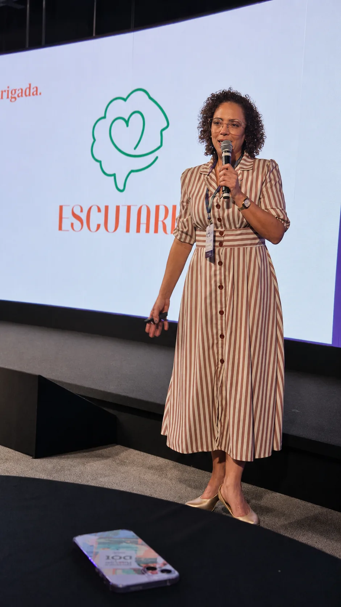
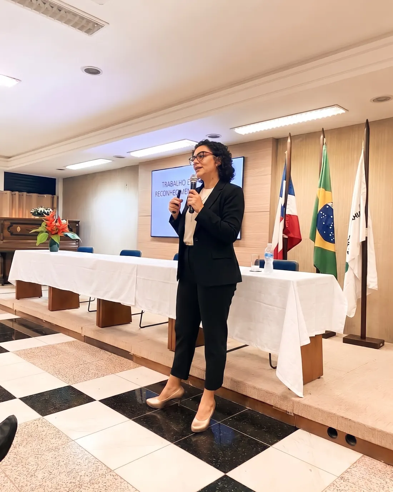
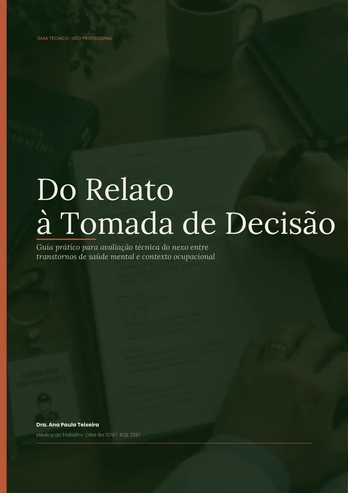

NR-1 已生效：心理社会因素不能只是空洞的清单
该记录什么、如何支撑证据，以及如何把心理社会因素转化为对管理、预防和监管检查有用的语言。
咨询详情 →把临床内容应用到管理现实中的讲座：NR-1（巴西职业风险管理标准）、心理社会因素、领导力和组织诚信。适合追求深度、方法和近三十年企业经验的企业、行业活动、人力资源、职业健康团队和管理者。

四个核心主题，可根据受众、企业所处阶段和活动目标调整。
该记录什么、如何支撑证据，以及如何把心理社会因素转化为对管理、预防和监管检查有用的语言。
咨询详情 →如何识别信号、开展第一次谈话、区分管理支持与临床角色，避免在痛苦面前仓促决策。
咨询详情 →用技术标准更准确地界定涉及疾病、价值观受损、因果关系、内部调查和责任的情境。
咨询详情 →一场基于本书的讲座，帮助员工、管理层、职业健康和经营管理之间建立共同语言。
咨询详情 →
讲座把职业倦怠、骚扰、心理社会因素和心理安全等主题，转化为人力资源、职业健康团队、管理者和高管在日常中能够坚持执行的决策。
在大会和企业活动上的讲座与圆桌记录，从 Fórum Saúde 360 到与 ABRH（巴西人力资源协会）合作的工作坊。



适合观众分布在不同地点的企业和活动。包括发送给主办方的录像，以及供内部分发的 PDF 幻灯片。
根据范围报价
适合受众广泛的大型线上活动。交付内容与标准形式相同，并为活动提供专门制作。
根据范围报价
适合萨尔瓦多大都市区的企业和活动。包括录像、PDF 幻灯片，以及赠送给主办方的签名书。
根据范围报价
适合各州首府、内陆城市及其他地区的活动。交付内容与线下形式相同，差旅、住宿和每日津贴根据城市确定。
根据范围报价
曾服务企业和行业活动，包括 PetroRecôncavo、Alvopetro、ABRH-BA 和 ABRH Sergipe。已举办 130 余场讲座 · 培训专业人士超过 1 万名 · 好评率 99%。
会。有面向萨尔瓦多大都市区的线下形式，也有面向其他首府和内陆城市的形式，差旅、住宿和每日津贴根据城市确定。对于分布在各地的观众，还有最多 300 人的线上形式。
所有形式都包括发送给主办方的录像和供内部分发的 PDF 幻灯片。在萨尔瓦多的线下讲座，主办方还会获赠一本签名版《Quando o Trabalho Dói》。
线上形式约 60 分钟。线下讲座最长 90 分钟，包括观众提问时间。
可以。每个主题都会根据受众、目标和组织所处阶段进行调整。也有为 SIPAT、管理者会议和内部活动周准备的现成方向。
方案按活动定制，考虑形式、受众规模、城市和交付材料。您发送活动背景后，回复中会附上推荐主题、形式和费用。
通过表单提交的需求会在 2 个工作日内回复。通过 WhatsApp 通常更快。也可以直接在日历上预约 20 分钟的通话。
一份 27 页的指南（葡萄牙语），面向需要有方法地评估精神障碍与工作环境之间关系的专业人士。依据巴西联邦医学委员会第 2.323/2022 号决议和 NR-1。
免费领取指南 →
请发送活动背景、受众、目标和预计日期。回复的方案中会包括推荐主题、形式和后续步骤。
正在筹办活动？主办方资料（PDF，葡萄牙语）：三种长度的个人简介、主题、形式、所需设施和宣传照片。